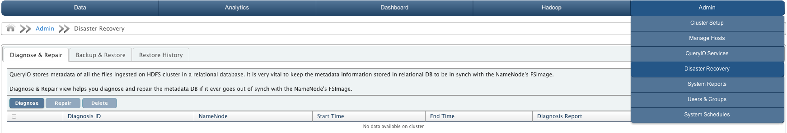
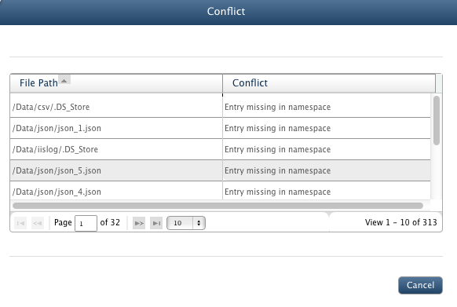
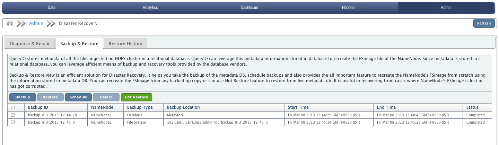
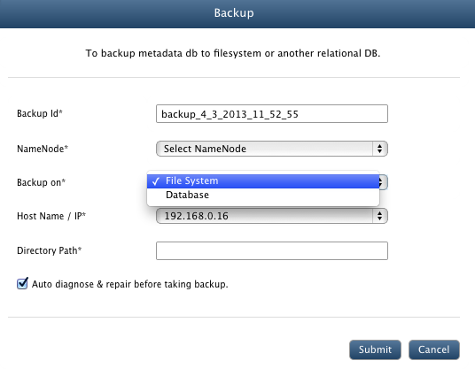
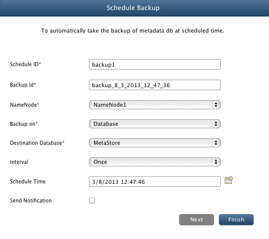
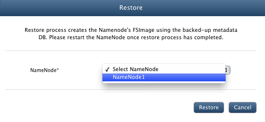
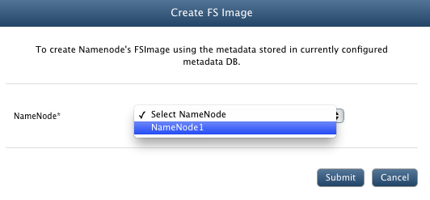
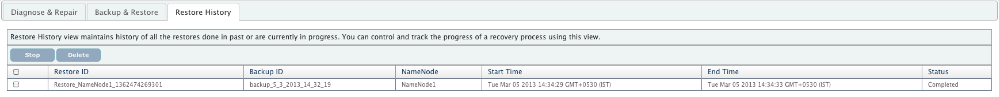

Disaster Recovery
In This Chapter
This chapter is based on diagnosis, backup and recovery of data on case disasters or failures.
Introduction
QueryIO provides recovery of your valuable data in case of catastrophic disasters. In case of failures, QueryIO allows you to restore from the stored backups.
QueryIO provides various functionalities of Disaster Recovery.
Diagnose & Repair
QueryIO stores metadata of all the files ingested on HDFS cluster in a relational database. It is very vital to keep the metadata information stored in relational DB to be in synch with the NameNode's FSImage.
Diagnose & Repair view helps you diagnose and repair the MetaStore DB if it ever goes out of synch with the NameNode's FSImage.

Diagnose process compares NameNode's FSImage and MetaStore DB and checks if they are in sync or not. If they are not in sync, then Repair process will perform necessary operation according to
result of diagnose process, so that both database and namespace are in sync.
Following details are specified about diagnose process:
- Diagnosis ID : Unique Id of the process
- NameNode : Namespace on which diagnose or repair process was initiated.
- Start Time : Starting time of the process.
- End Time : Finish time of the process.
- Diagnosis Report : Click here to view the final report of the diagnose or repair process.
- Status : Final status of the initiated diagnose or repair process. (Repair Complete, Diagnosis Complete)
Diagnose
Click on Diagnose button on Diagnose & Repair tab to start diagnose operation.
- Diagnosis Id : Unique ID for the diagnose process.
- NameNode : Select namespace to be diagnosed.
- Stop Diagnosis after N conflicts where N = Select this checkbox to stop diagnose process if there are more than specified number of conflicts between namespace and metadata database.
You can specify maximum allowed conflicts in the textbox.
- Click Diagnose button to start the process.
You can view the final report of the diagnose process by clicking on the View Diagnosis Report for respective process.
Diagnose Report
- It shows the conflicts found during sync process.
- List of files in which conflict was found are displayed along with type of conflict found.
- Following type of conflicts can be found :
- No conflict
- Metadata is different
- Entry missing in namespace
- Entry missing in database

Repair
Repair process will resolve all the conflicts found during diagnose process.
Select a diagnose entry from the table and click on Repair button on Diagnose & Repair tab to start Repair operation.
Following operations are performed to sync namespace and database, according to the type of conflict generated on diagnose process :
- Metadata is different : Conflict in namespace and database. Irrelevent entries from database are removed.
- Entry missing in namespace : Entries which are not found in FSImage of namespace are removed from database.
- Entry missing in database : Entries not found in database are added to it according to FSImage of NameNode.
You can view the final report of the repair process by clicking on the View Diagnosis Report for respective process. After the repair process is completed, status changes to "Repair Complete".
You can also Delete diagnose or repair processes executed on QueryIO.
Backup & Restore
QueryIO stores metadata of all the files ingested on HDFS cluster in a relational database.
QueryIO can leverage this metadata information stored in database to recreate the FSimage file of the NameNode.
Since metadata is stored in a relational database, you can leverage efficient means of backup and recovery tools provided by the database vendors.
QueryIO allows you to take backups of configured metadata DB and restore it to create FSImage of namespace.
Backup & Restore view is an efficient solution for Disaster Recovery.
It helps you take the backup of the metadata DB, schedule backups and also provides all the important feature to recreate the NameNode's FSImage from scratch using the information stored in metadata DB.
You can recreate the FSImage from any backed up copy or can use Hot Restore feature to restore from live MetaStore DB.
It is useful in recovering from cases where NameNode's FSImage is lost or has got corrupted.
Following details about Backup and Restore are displayed :
- Backup ID : Unique identifier of the backup process.
- NameNode : Id of the backup namespace.
- Backup Type : Type of the backup taken. It can be Database or FileSystem
- Backup Location : Destination location of backup. In case, backup is on database, backup location is name of database on which backup is stored. In case of file system, it is destination directory.
- Start Time : Starting time of the backup process.
- End Time : Finish time of the backup process.
- Status : Final state of the backup process.

Backup
Click on Backup button on Backup & Restore tab to start backup operation.
- Backup Id : A unique identifier for the backup process.
- NameNode : Select namespace whose backup will be taken.
- Backup on : Backup type. (FileSystem or Database).
- In case of backup type is file system
- Host Name / IP : Select the configured host on which backup will be saved.
- Directory Path : Specify the destination location of backup files.
- In case of backup type is database
- Destination Database: Select the configured database on which backup is saved.
- Auto diagnose & repair before taking backup : Select checkbox to run diagnose and repair process before backup will be taken.

Schedule
Click on Schedule button on Backup & Restore tab to schedule backup operation.
- Schedule ID : A unique identifier for the schedule process.
- Backup Id : A unique identifier for the backup process.
- NameNode : Select namespace whose backup will be taken.
- Backup on : Backup type. (FileSystem or Database).
- In case of backup type is file system
- Host Name / IP : Select the configured host on which backup will be saved.
- Directory Path : Specify the destination location of backup files.
- In case of backup type is database
- Destination Database: Select the configured database on which backup is saved.
- Interval : Select from Once, Twelve Hours, Daily, Weekly.
- Schedule Time : Select the schedule time from data time picker.
- Send Notification : Select checkbox if you want receive notification about backup process.
- Click "Next" to configure notification setting or "Finish" to complete scheduling backup process.

Restore
Select the backup from the list and click Restore on Backup & Restore tab to start restore process.
Restore process will recreate the NameNode's FSImage from scratch using the backup information stored in metadata DB.
- Select the namespace on which selected backup will be restored.
- Click Restore to start the process.
- You can view the status of restore process in Restore History tab.

You can also Delete backups.
Hot Restore
Hot Restore provides you to restore using live metadata DB. Restore will done from the current state of the metadata DB.
- Select the namespace to be restored from live metadata db.
- Click Submit to start the process.

Restore History
Restore History view maintains history of all the restores done in past or are currently in progress. You can control and track the progress of a recovery process using this view.
Following details are displayed :
- Restore ID : Unique identifier of the restore process.
- Backup ID : Unique identifier for the backup which was restored.
- NameNode : Namespace which was restored.
- Start Time : Starting time of the restore process.
- End Time : Finish time of the restore process.
- Status : Final state of the restore process.
You can also Stop ongoing restore process and Delete entries from history table.

Copyright © 2015 QueryIO Corporation. All Rights Reserved.
QueryIO, "Big Data Intelligence" and the QueryIO Logo are trademarks
of QueryIO Corporation. Apache, Hadoop and HDFS are trademarks of The Apache Software Foundation.